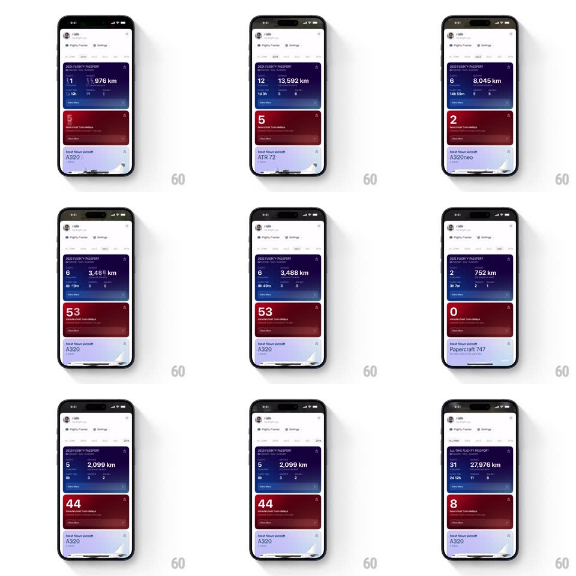

Media
Frame-by-frame

Rebuild this interaction 1:1: Flighty's stats-by-year profile - a white profile page whose stacked color stat cards (purple flight passport, red delay hours, blue most-flown aircraft) crossfade and blur their values into a new year's numbers when you tap a year tab.

Rebuild this interaction 1:1: Flighty's stats-by-year profile - a white profile page whose stacked color stat cards (purple flight passport, red delay hours, blue most-flown aircraft) crossfade and blur their values into a new year's numbers when you tap a year tab.
## Integration
Integration: stack-agnostic spec - springs given as stiffness/damping, timed motions as duration + curve; map every value to your framework and animation library of choice.
## Scene
White profile page: avatar + name header ("rishi") with "Flighty Friends" and "Settings" pills, a year tab row (ALL TIME, 2025, 2023, 2022...), then three stacked rounded cards: a purple gradient "ALL TIME FLIGHTY PASSPORT" card ("31" flights, "27,976 km", "2d 12h", "11", "8" stats + a plane illustration), a red gradient card ("8 hours lost from delays"), and a light-blue card ("Most Flown Aircraft A320" with a faint plane render).
## Motion spec
Pattern: blur-crossfade value transition per tab.
- Tab tap: the active tab pill slides (spring ~380/22); every card's title ("2023 FLIGHTY PASSPORT") and numbers transition together - outgoing values blur (0 -> 6px) and fade over 200ms while incoming values unblur and fade in (250ms, 40ms later) - the whole page melts into its new year.
- Card colors hold - only content transitions; the purple/red/blue identity is constant.
- The plane illustration on each card crossfades with a slight scale settle (0.97 -> 1, 250ms) when the aircraft changes.
- Numbers large enough to roll do so within the crossfade (digit roll 500ms) - the blur masks the roll's start.
- Scroll: cards translate at 1:1; the tab row pins under the header with a hairline shadow appearing past 8px of scroll.
## Calibration
- Blur peaks mid-transition and fully clears - no permanent softness.
- All three cards transition in sync - a year change is one event, not three.
## Reduced motion
Values crossfade without blur or roll; tabs switch instantly.
## Don't miss
- The blur-melt is the signature - numbers dissolve and reform instead of snapping.
- Cards keep their color identity across years - the year changes, the dashboard doesn't rearrange.